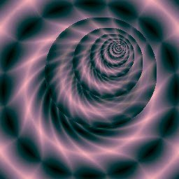
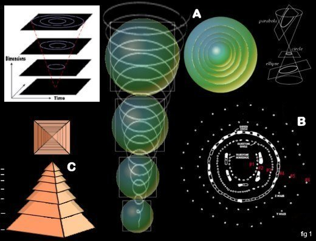
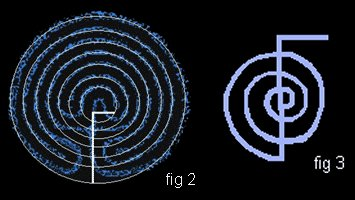
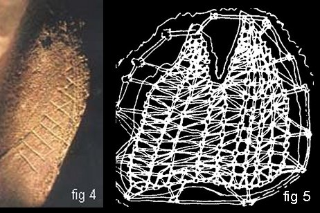
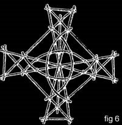
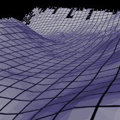
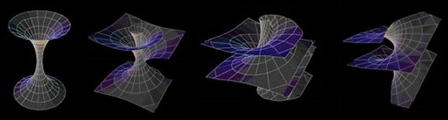

Vortex Energy of Ancient Sites  |
The realms of muli-dimensional aspects are not subjected to time or space. This allows a structure to be divided into individual parts, but also permits one another to occupy the same "space and time". It is also conducive for interactions to be created instantly. The only thing that has ever created the illusion of separation is our own consciousness. The conscious part allows us as individuals to speed up or decease what we create. Since our conscious mind is focused in this dimension we constantly co-creating with others in a spaced-out framework we call time. This is done for reference and experience for cause and effect teachings Looking down a vortex, or traveling down an astral tube, you will see different grid edges. Exiting at these individual edges or points you enter into specific realms or dimensions (fig #1-A).
|
|  |
With this in mind you can see how several spheres can overlap at once but still be separate spheres. The edges of these spheres are the concentrated "shells" that show up as defined veils or breaking edges in vibration. Recognition of these edges is simply a matter of connecting to them by mimicking their shape. So the shape establishes the connection. Square, circular, triangular, etc. are shapes that resonate with the human form. As well, circles of stone outline this connection as lenses that focus or concentrate this group of harmonics. |
 |
The same is true with the labyrinth (fig #2). This structure creates a connection to a group of harmonics. The labyrinth design also allows the ability to choose direction and this creates a different flavor. The centerline acts as a common link. Walking in this pattern joins and connects many harmonic structures of like kind. Walking is not the only way to connect. Our minds and thoughts create the effect by desire. Reiki symbols also provide the same "dial up ability". Like the labyrinth the Reiki symbol Cho Ku Ray (fig #3) has two directions that create a connection to different qualities. The Cho Ku Ray shown in figure 3 is drawn clockwise and is said to connect to the heavens. The Native Americans call this direction the masculine energy. If drawn counterclockwise, the connection is towards the earth or the receptive feminine energy. This is just one aspect using physical symbols with larger universal connections. The shape, placement, and alignment with other objects is crucial. Desire, intent, and spiritual awareness from the practitioner are also used to form creations without time lag. In figure 1 examples are shown of structures and their respective connections to different grid structures. Stonehenge "B" replicates a two dimensional plane, while the steps in pyramid "C" actually connect on three dimensional levels. Both are right because space is not a factor here. |
 |
Figure 4 above is a good example of how long ago humanity has been aware of all of this. This picture is of a 100,000-year-old engraving of the grid. The picture to the right (source unknown) is a twine map from Australia created to show what the Aborigines call dream lines. These dream lines are lines or energy circuits that can be followed in OBE states. |
 |
The Polynesians were master navigators who tracked their way across huge expanses of ocean without complex aids like a compass, sextant, or chronometer. Figure 6 shows a Polynesian navigational tool that has all the elements of understanding grid work. It even has a beautiful Vesica Piscis in the middle. The following quotes from Shuar and Bugis shamans describe how they traveled out of body to find their way "in body". "The spirit if you like, leaves the body and takes a long voyage, 'the voyage to truth.' But if the selves have been dutiful to the gods and are endowed with the correct qualities, the true vision will appear, and the spirit self will be led down the real path. Then it can return and show the way to the other part of the self". It is interesting to see that this individual is spiritually advanced enough to recognize that they are composed of many probable selves. He goes on to say that he flies. "That is to say, the spirit self does. How else could our captains use this method to find their way across vast oceans? They fly out over the seas and return with knowledge of what lies beyond"*. |
 |
Although the grids are generally straight they are also at points of interaction twisted into vortexes that create the spirals. If this is hard to imagine the picture sequence below shows how the reverse is possible. The picture to the left is also at the center core of the Universal Torus. |
 |
BACK HOME Site Map Bill Dayholos © January/2002 |